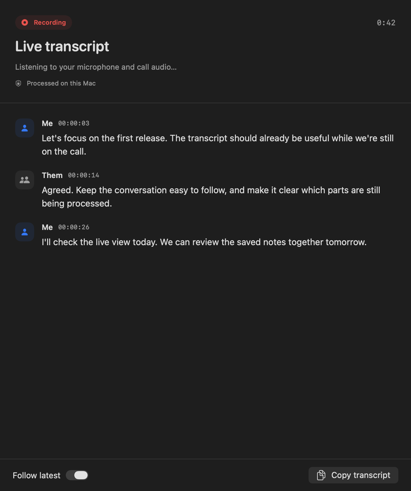

Local speech
Whisper or Parakeet
Audio stays local. Whisper prioritizes bilingual accuracy; Parakeet prioritizes speed on clean speech.
Your words.
Already taking shape.
Dictate straight into the app you’re using. Follow meeting transcripts while the call is still happening. All from your Mac’s menu bar.
macOS 14.4+ · Apple Silicon · Apache-2.0
A 36-second look at local meeting transcripts, a clearer native interface, and dictation that stays out of your way. Press play when you’re ready.
Vocaret transcribes meeting passages locally while the conversation continues. An illustrative Me / Them conversation gives way to the native live transcript panel. The speech model prepares at recording start, transcribes during the call, and finishes remaining passages after stop. For dictation, hold Control–Option–D, speak, and release to insert text. Meetings stay local; cloud dictation is optional. Available as source for Apple Silicon Macs running macOS 14.4 or later.
Start with ⌃⌥M. Vocaret captures your microphone and system audio, then turns short passages into text while you keep talking.
Meeting transcription and optional summaries stay on your Mac, even if you choose Soniox for dictation.

The overlay never steals focus. Your cursor stays in the app where the words belong.
Press and hold ⌃⌥D. A quick tap can toggle recording instead.
Watch up to four lines of live text with Soniox, or keep every sample local.
The transcript is inserted at your cursor. If insertion fails, it is copied.
For dictation, speech recognition and formatting are separate choices. Keep them on your Mac, or opt into cloud services. Meetings always use local processing.
Audio stays local. Whisper prioritizes bilingual accuracy; Parakeet prioritizes speed on clean speech.
Use your own regional project key. Settings shows the exact current-month stt-rt-v5 cost from Soniox.
Formats text privately through llama.cpp. The optional model download is about 2.4 GB and works offline.
Sends transcript text—not audio—to OpenAI for fast formatting. It uses your API key and falls back to the original text.
Vocaret is distributed as source. The install script builds, places, and launches ~/Applications/Vocaret.app.
git clone https://github.com/HonzaCuhel/vocaret.gitcd vocaret./scripts/build_app.sh --installVocaret lives in the menu bar. Open its window only for history, meetings, the speaking coach, and settings.
Soniox Live: create a project, copy its API key, then open Settings → Transcription → Soniox Live. Match the region to the key: a US key cannot use the EU endpoint.
Add your own OpenAI key under Settings → AI cleanup. This optional paid service receives the dictation transcript for formatting; failures keep the original text.
Read the OpenAI model details